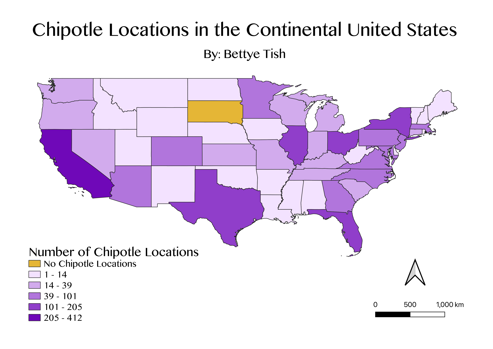

Homework 7: Creating My Own Chloropleth
By: Bettye Tish
For this assignment, I chose to make a chloropleth showing the frequency of my
favorite fast food restaurant across America. Any restaurant with tofu that good
deserves to be celebrated with a QGIS map!
The map was made using data from Statista, which
I converted from a .XLSX to a .CSV file and cleaned. I chose to focus on the continental United States
because there was no data for Alaska and Hawaii. I could have included these states but
they would be challenging to see at this scale because of their extreme sizes. Including them
would have made for a less aesthetically pleasing map. I used the natural breaks
classification scheme to display my data because it emphasizes the natural
groupings within the data without obscuring outliers. California was one such outlier, it
had 207 more Chipotles than the next state (Texas), for a grand total of 412 Chipotles.
Rightfully so, natural breaks classification assured that California had its own category.
In retrospect, this map could be improved by normalizing the data (perhaps Chipotles per person
rather than numbers of Chipotle stores in each state) because it largely just reflects
population rather than a state's true preference for the American fast casual dining sweetheart Chiptole.

Data used for this project:
Original .XLSX file
Cleaned .CSV file
Geojson vector